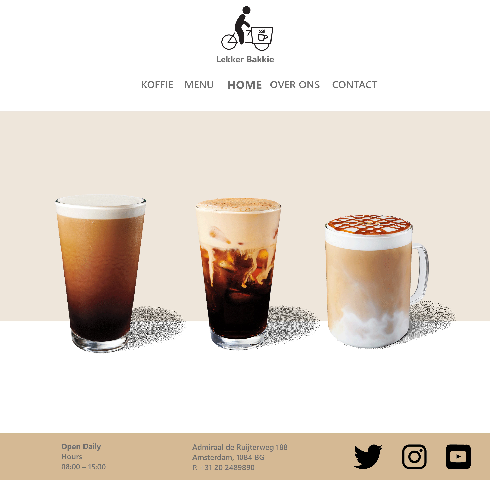
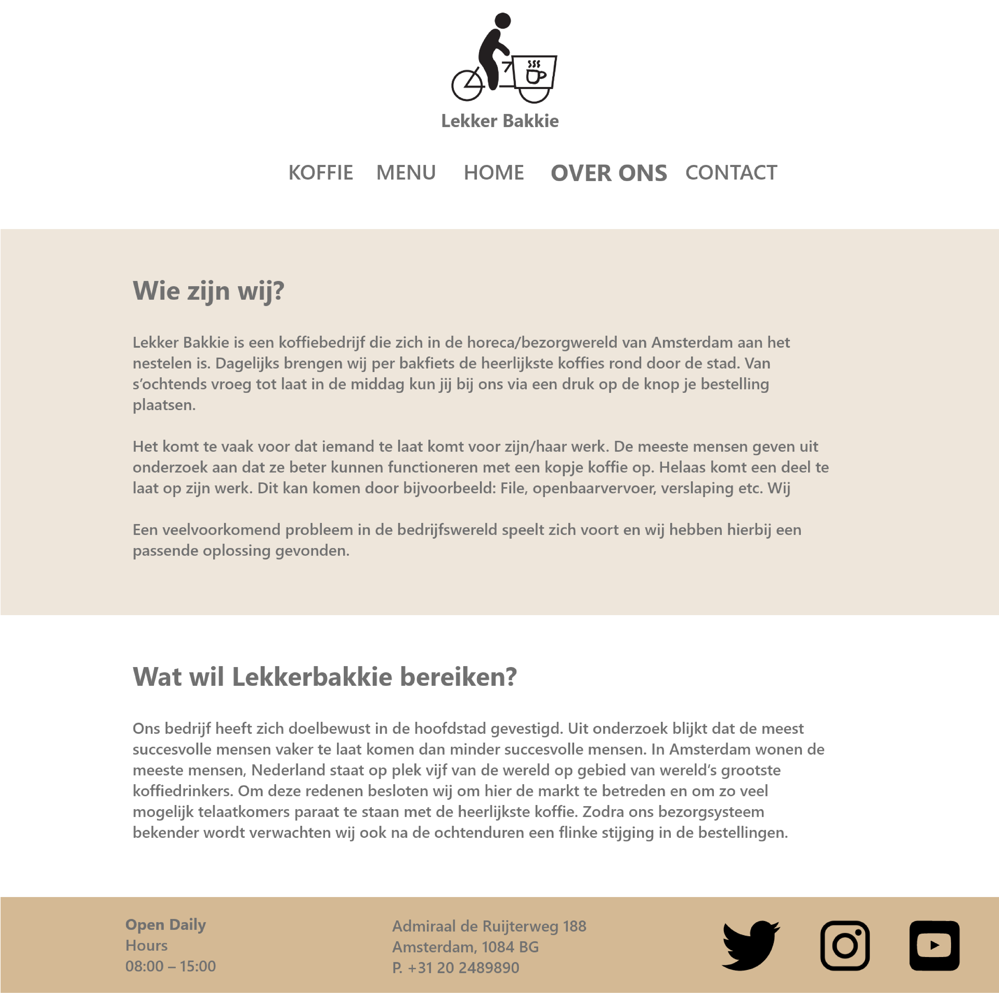
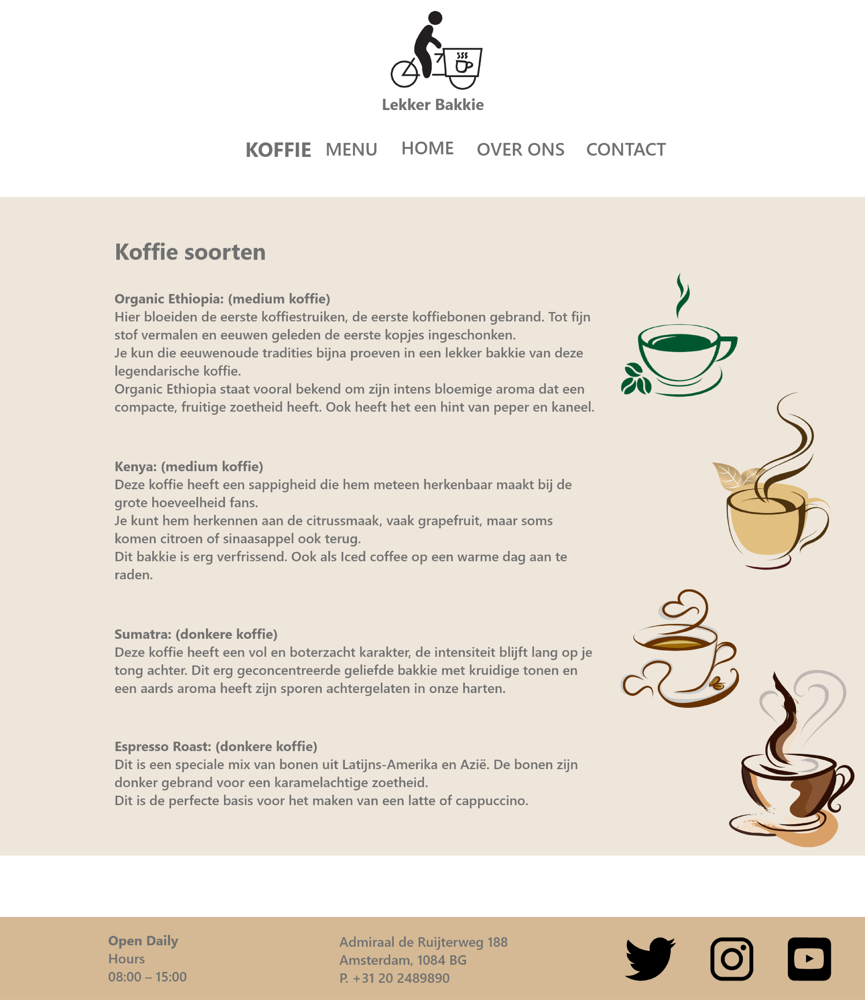
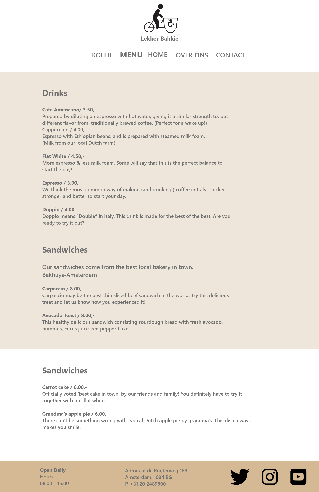
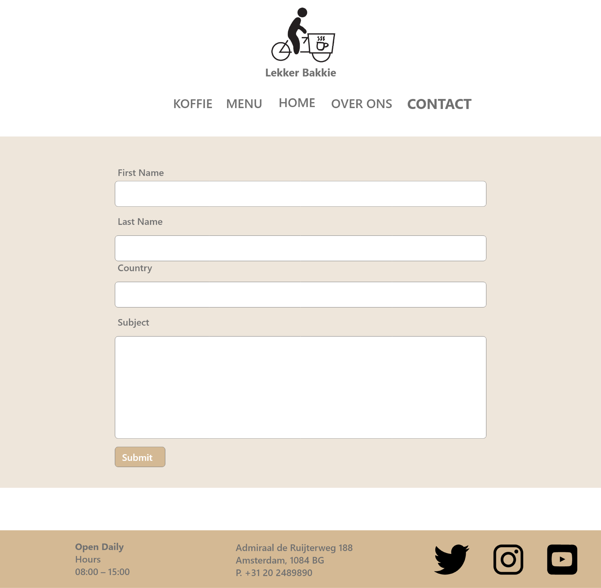

<div id="ajax-page" class="ajax-page-content">
    <div class="ajax-page-wrapper">
        <div class="ajax-page-nav">
            <div class="nav-item ajax-page-prev-next">
                <a class="ajax-page-load" href="portfolio-uxui_project-3.html"><i class="lnr lnr-chevron-left"></i></a>
                <a class="ajax-page-load" href="portfolio-uxui_project-2.html"><i class="lnr lnr-chevron-right"></i></a>
            </div>
            <div class="nav-item ajax-page-close-button">
                <a id="ajax-page-close-button" href="#"><i class="lnr lnr-cross"></i></a>
            </div>
        </div>

        <div class="ajax-page-title">
            <h1>Website concept: Lekker Bakkie</h1>
        </div>

        <div class="row">
            <div class="col-sm-8 col-md-8 portfolio-block">
                <div class="owl-carousel portfolio-page-carousel">
                    <div class="item">
                        
                    </div>
                    <div class="item">
                        
                    </div>
                    <div class="item">
                        
                    </div>
                    <div class="item">
                        
                    </div>
                    <div class="item">
                        
                    </div>
                    <div class="item">
                        
                    </div>
                    <div class="item">
                        
                    </div>
                </div>

                <script type="text/javascript">
                    jQuery(document).ready(function($){
                        $('.portfolio-page-carousel').imagesLoaded(function(){
                            $('.portfolio-page-carousel').owlCarousel({
                                smartSpeed:1200,
                                items: 1,
                                loop: true,
                                dots: true,
                                nav: true,
                                navText: false,
                                margin: 10,
                                autoHeight:true
                            });
                        });
                    });
                </script>
            </div>

            <div class="col-sm-4 col-md-4 portfolio-block">
                <!-- Project Description -->
                <div class="project-description">
                    <div class="block-title">
                        <h3>Description</h3>
                    </div>
                    <ul class="project-general-info">
                        <li><p><i class="fa fa-user"></i>Bryan Ortiz Franco</p></li>
                        <!-- <li><p><i class="fa fa-globe"></i> <a href="https://xd.adobe.com/view/647ee36e-25bf-47ff-878e-3f2dba19f027-312d/" target="_blank">www.project-site.com</a></p></li> -->
                        <li><p><i class="fa fa-calendar"></i> 7 may, 2022</p></li>
                    </ul>

                    <p class="text-justify">To convey our website idea for our coffee delivery website: Lekker Bakkie, I created this prototype website with the help of my group. 
                        Our concept for Lekker Bakkie was a coffee delivery service that would deliver coffee around town daily by a box bike. 
                        It would help people who were late for work or couldn't go to a coffee shop. You could order your drink in advance and you could pick up your drink without having to wait for your drink to be ready.</p>
                    <!-- /Project Description -->

                    <!-- Technology -->
                    <div class="tags-block">
                        <div class="block-title">
                            <h3>Technology</h3>
                        </div>
                        <ul class="tags">
                            <li><a>Adobe Illustrator</a></li>
                            <li><a>Adobe Photoshop</a></li>
                            <li><a>Adobe XD</a></li>
                        </ul>
                    </div>
                    <!-- /Technology -->

                    <!-- Share Buttons -->
                    <div class="btn-group share-buttons">
                        <div class="block-title">
                            <h3>Share</h3>
                        </div>
                        <a href="#" target="_blank" class="btn"><i class="fab fa-facebook-f"></i> </a>
                        <a href="#" target="_blank" class="btn"><i class="fab fa-twitter"></i> </a>
                        <a href="#" target="_blank" class="btn"><i class="fab fa-dribbble"></i> </a>
                    </div>
                    <!-- /Share Buttons -->
                </div>
                <!-- Project Description -->
            </div>
        </div>
    </div>
</div>